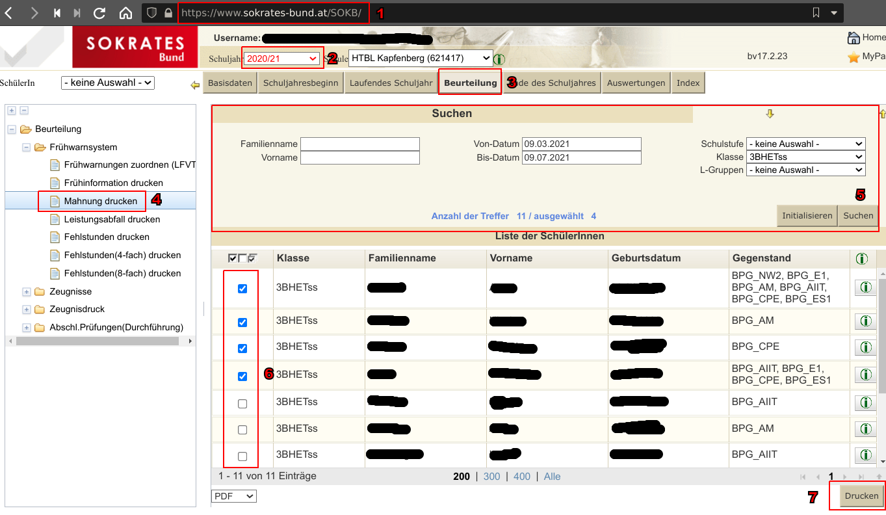
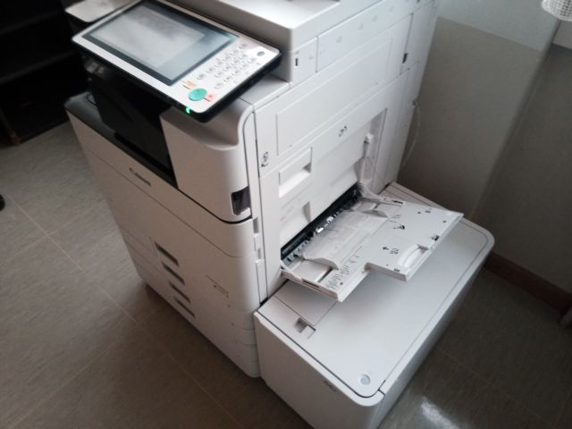
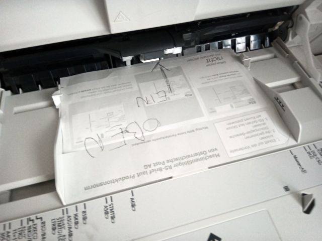
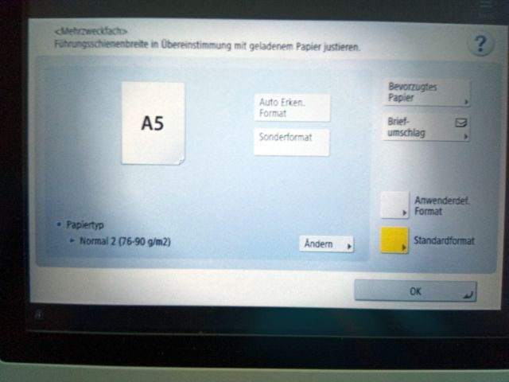

RSb Umschlag Generator
Wählen sie das aus Sokrates exportierte PDF
Serverseitig werden keine Informationen dauerhaft gespeichert, daher bei Fehlermeldungen diese bitte kopieren. Bei Problemen Mail an
TRC
Hilfe

Öffne Sokrates
Selektiere das gewünschte Schuljahr
Klicke auf den Menüpunkt Beurteilung
Wähle was zu Drucken gewünscht (z.B. Mahnungen)
Fülle das Suchraster
Auswahl der gewünschten Schüler
Bestätige mit "Drucken"
Das nun gespeicherte PDF auf dieser Seite hochladen.
Das Ergebnis ausdrucken.
Die Seitenlade des Druckers öffnen
Die RSb Formulare einlegen
Das Papierformat auf A5 auswähen
  